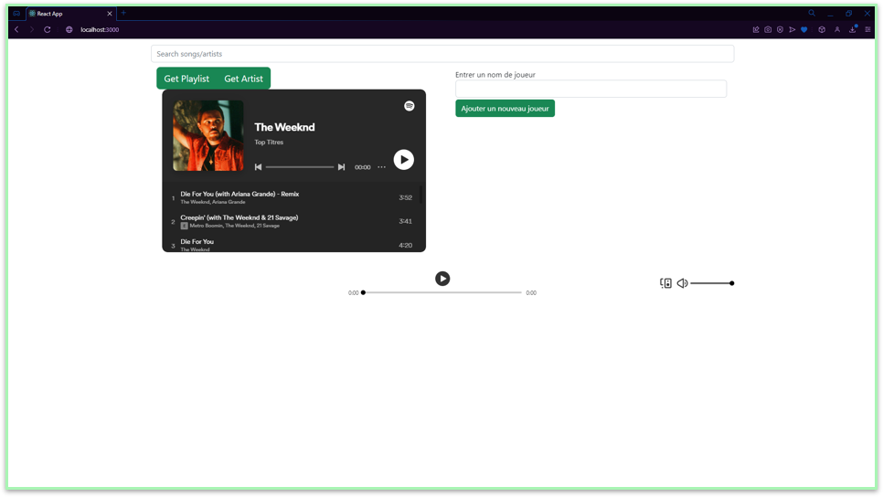
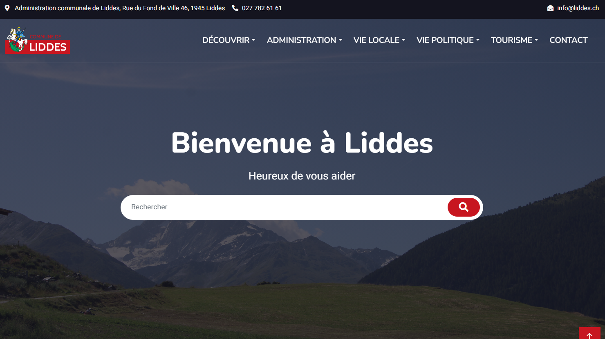
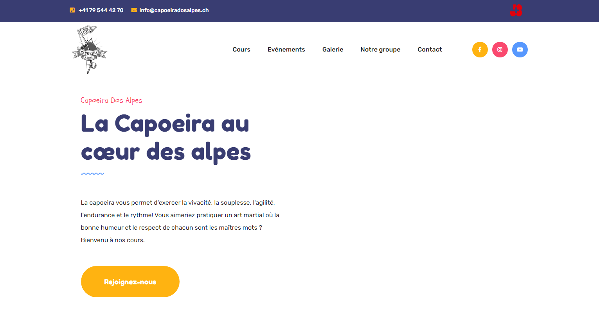
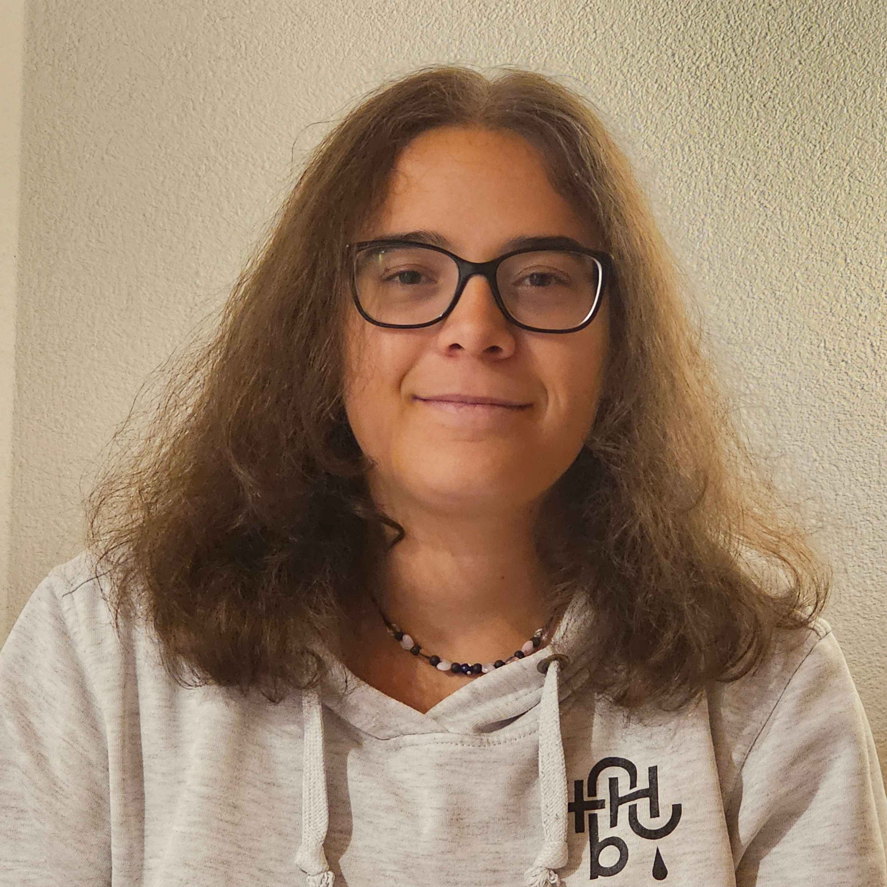

Melody Mystery
Un blindtest musical pour deviner des morceaux entre amis.

Informaticienne CFC, diplômée en 2024 avec une maturité professionnelle technique. Déterminée, autonome et passionnée : je veux apprendre sur le terrain et être utile à votre équipe.
Un blindtest musical pour deviner des morceaux entre amis.

Refonte complète du site et création d'un CMS pour gérer les événements.
Visiter le site ↗
Maintenance depuis 2024 : nouvelles fonctionnalités et mise à jour des activités.
Visiter le site ↗

DZMon objectif : financer mes études à la HES-SO de Sion tout en gagnant de l'expérience. Passionnée d'informatique depuis toute petite, toujours prête à apprendre.
JM Contactless, Martigny
Site de la commune de Liddes, TPI, petits projets internes, gestion du matériel pour des manifestations.
DayOneFactory, Sion
Maintenance de sites en production (Infomaniak), projets web, contact avec les clients.
Proactive Solutions, Sion
Projet interne de gestion des tâches, gestion de projet, travail d'équipe.
EPTM, Sion
CO de Goubing, Sierre
HTML / CSSJavaScriptPHPC#Bases de donnéesNo-code
AutonomieRespect des délaisGestion de projetGestion d'équipeCréation de contenuRéseaux sociaux